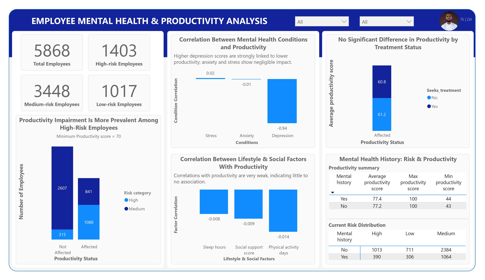

Business problem
Organisations struggle to see how mental health affects productivity. This project set out to:
- Assess the relationship between mental health risk, specific conditions and productivity.
- Evaluate the effect of lifestyle, social factors and treatment-seeking among at-risk employees.
- Compare productivity and risk across gender and work environments.
Dataset overview
A single cross-sectional employee survey from Kaggle with 5,868 employees and 15 columns.
SQL handled cleaning, feature engineering and exploratory analysis. Power BI handled visualisation and the interactive dashboard.
Data cleaning and preparation
- Removed non-employed statuses (
Student,Self-employed,Unemployed). - Rounded
sleep_hoursandproductivity_scoreto whole numbers. - Converted Yes/No fields in
mental_health_historyandseeks_treatmentto binary (1/0). - Checked for nulls, blanks and duplicates. None were found.
- Standardised categorical formatting across gender, work environment and risk level.
Data modelling and DAX
- Created calculated columns segmenting medium and high-risk employees as Affected (productivity below 70) or Not Affected (70 and above). Low-risk employees were marked N/A and excluded from focused visuals.
- Built dynamic measures for employee counts and productivity statistics.
- Implemented Pearson correlation manually in DAX (covariance divided by the standard deviations).
- Built supporting dimension tables to structure the correlation visuals.
Key questions
- Q1How is mental health risk level associated with productivity?
- Q2Among underperforming at-risk employees, do lifestyle and social factors relate to productivity?
- Q3Do at-risk employees who seek treatment show different productivity patterns?
- Q4Which condition (stress, anxiety, depression) has the strongest association with productivity?
- Q5Do productivity or risk levels differ across remote, hybrid and on-site work?
- Q6Are there gender differences in risk levels and productivity?
- Q7Does a history of mental health conditions relate to risk or productivity?
Dashboard

Key insights
The strongest factor linked to lower productivity. Higher depression scores correlated with lower productivity, while anxiety and stress showed no meaningful association.
of medium and high-risk employees scored below the productivity threshold (70). 50% scored 70 or above.
of at-risk employees sought treatment, with no substantial difference in productivity scores.
Sleep, physical activity days and social support showed little to no impact on productivity among at-risk employees.
Productivity was similar across remote, hybrid and on-site staff, but on-site employees were overrepresented in risk categories.
Productivity was comparable across genders, and gender differences in risk were minimal.
Employees with prior mental health conditions did not differ significantly in productivity or risk.
Recommendations
- Prioritise interventions for employees with high depression scores.
- Introduce proactive monitoring for on-site employees.
- Favour holistic support programmes over lifestyle-only interventions.
- Encourage treatment-seeking without assuming immediate productivity gains.
- Use this analysis as a baseline for longitudinal tracking of programme impact.
Conclusion: depression is the primary factor associated with productivity decline. Lifestyle factors and treatment-seeking showed limited association, so support is best targeted at employees with elevated depression scores and on-site arrangements.
Limitations
- Cross-sectional data cannot establish causality.
- No time-sequenced data to track changes after lifestyle changes or treatment.
- No data on workload, managerial support or personal stressors.